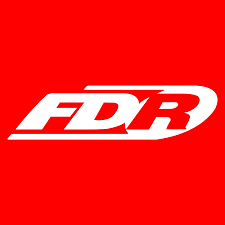

Full-stack web developer intern
Siemens Indonesia
Dec 2024 - Now
- Design and developed responsive web interfaces
- Built and maintained internal web application to improve company workflows
- Developed and implement REST APIs
- Integrated jQuery for dynamic table management and interactive data handling
- Wrote software documentation to support development and maintenance

Calibration Engineer
Suryaraya Rubberindo Industries
Mart 2021 - Mart 2023
- Led team performance by detail production inspections resulting >95% quality target
- Coordinated multiple divisions guaranteed schedule on-time and high quality measurement tools
- Proactive identied issue and quality standards, minimizing production downtime